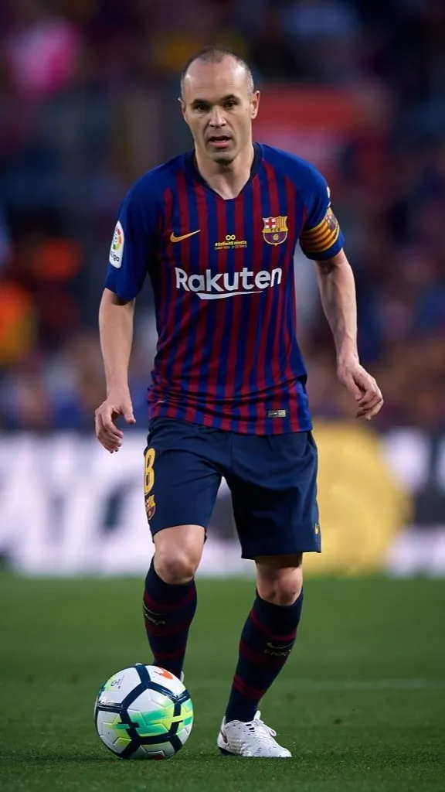
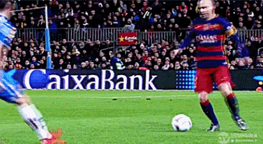

안드레스 이니에스타 (Andrés Iniesta)
키 171cm / 체중 68kg
스페인 국적의 에미리트 클럽 소속 축구 선수. 포지션은 중앙 미드필더.
바르셀로나 유스 출신으로 2002년부터 2018년까지 활약했으며 사비 에르난데스, 세르히오 부스케츠와 함께 FC 바르셀로나의 최전성기를 이끈 중원의 핵심이었다. 또한 국가대표팀에서도 축구 역사상 최초의 메이저 대회 3연패를 이끌었다.2010년과 2012년에 발롱도르 2위, 3위를 차지했고, 2009년부터 FIFA FIFPro 월드 XI에 9회 연속, UEFA 올해의 팀에 6회 선정되었으며 유로 2008, 2010 월드컵, 유로 2012 베스트팀에 모두 이름을 올리는 등 화려한 개인 커리어를 보유하고 있다. 또한 축구 역사상 유일하게 FIFA 월드컵 결승전, UEFA 유로 결승전, UCL 결승전에서 모두 맨 오브 더 매치를 수상받은 기록도 있다.
(이니에스타의 시그니처 개인기 '라 크로케타')

바르셀로나의 경기 운영은 주로 오른쪽에 쏠려 있었는데, 오른쪽으로 끌어당긴 상대 선수들을 역이용하여 반대편으로 전개하여 상대 대형을 무너트린 뒤 흔들면서 상대 진영으로 밀고 들어갈 때 이니에스타의 진가가 발휘되었다. 장기는 극도로 좁은 공간에서도 공을 지키고, 빼내며, 수비를 허무는 능력이다. 이는 축구 역사를 통틀어서도 손에 꼽을 수 있을만한 수준이다. 드리블 솜씨는 절정에 이르렀다 평가되며, 메시,마라도나,가린샤 등 역대 최고의 드리블러와 비교해도 손색이 없다.

그리고 가장 주목할 능력은 현대축구에서 일류 선수에게 요구되는 가장 큰 덕목인 탈압박 능력이다. 컨디션이 올라올 때의 이니에스타가 보여주는 탈압박 능력은 말 그대로 절대적이다. 타의 추종을 불허하는 엄청난 볼키핑 능력이 바탕이 되어 뛰어난 트래핑과 개인기로 압박을 벗겨내고 절대 상대에게 공을 뺏기지 않은채 수비를 찢어버리는 스킬은 역대급. 덕분에 FC 바르셀로나는 라인을 극도로 끌어올린 상황에서도 볼을 탈취당하는 일이 거의 없어서 좀체 위기를 맞지 않는다. 요컨대, 사비와 함께 상대 팀의 악몽 같은 존재이다. 전성기의 이니에스타, 특히 2012 유로와 6관왕 시절 및 이후 2~3년의 이니에스타는 포워드 라인에 메시가 있다면, 미드필더 라인엔 이니에스타가 있다고 해도 될만큼 압도적인 임팩트를 보여주었다.